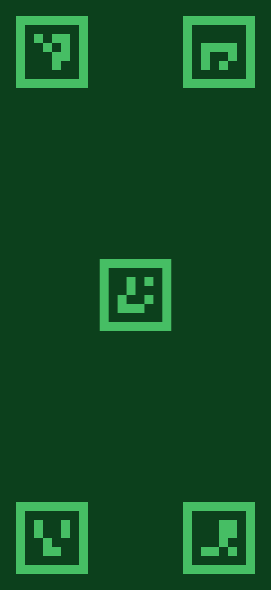
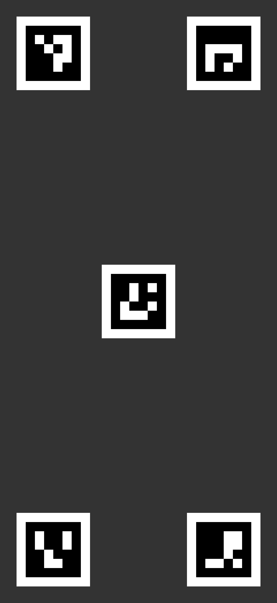
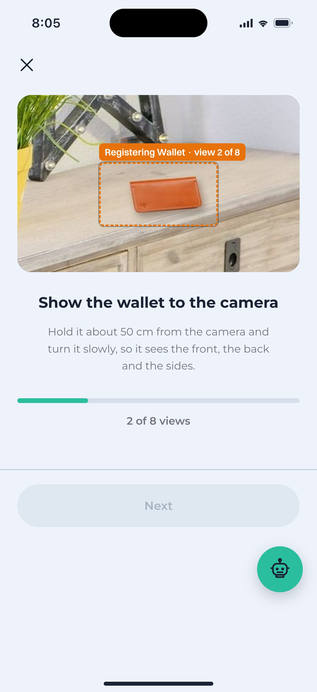

Video 1 · shoot · Thursday 19 Nov
Every take we need today, set up for screen replacement. The phone in shot shows a marker screen; the app goes in afterwards, tracked to it. Three places, 17 shots plus a hook pack, three takes each. The shots tagged “proof” come first: they feed the two 5-second proofs the team judges before the film is rebuilt.
Lock everything, so the takes cut together and the tracker sees the same picture from frame to frame. Portugal's mains run at 50 Hz: under room lights a 1/50 shutter is free of flicker, and it keeps the film's 30 fps beat.
| Setting | Value | Why |
|---|---|---|
| Resolution | 3840 × 2160 | 4K, the export size |
| Frame rate | 30 fps | the film's timeline |
| Shutter | 1/50 s (216°) | no flicker at 50 Hz; natural motion blur. Outdoors, if it's too bright at the lowest ISO: 1/100, then 1/200 |
| ISO | lowest clean, locked | less noise to match |
| White balance | manual, locked | set it on the white sheet in each room (daylight is about 5600 K) |
| Focus | manual, locked | tap on the subject, then lock; no hunting mid-take |
| Lens | 2× · 1× · 0,5× | 2× for hands and the phone (no distortion), 1× for plates, 0,5× only for the high-corner “home camera”. Lock the lens so it never switches |
| Stabilisation | Standard · Off | Standard handheld, Off when resting on books or a tripod |
| Codec | HEVC (H.265) | ProRes is about 6 GB a minute in 4K: it won't fit |
| Colour | Rec.709, no HDR, no Log | no grading time to spare |
| Audio | on | the clap lines up the cameras |
Without Blackmagic Camera: Settings › Camera › Record Video: 4K at 30 fps, HDR Video off, Auto FPS off, Enhanced Stabilization off, Lock Camera on, Lock White Balance on; Formats: High Efficiency.
Its screen shows markers during the take. Afterwards the tracker finds them in every frame and the real app recording is pinned in their place, with the thumb kept on top.



First-take check. After the first take of A1 and of B1, AirDrop the file to the Mac before going on. Claude runs the tracker on it (about a minute) and answers “go” or what to change: closer, slower, more light, screen angle.
The real registration: the wallet shown to the home camera while the phone shows the live view. Claude starts the kit camera recording on the Mac (record.py) before each A1 take.
The wallet story, and the photo concept for the second proof. The hall table needs the wallet, the keys and the front door in one view from a high corner.
In shade, the sun behind the person, so the screen isn't washed out. No faces, plates or house numbers.
Every action on screen gets its own sound. Record right after the matching shot, in the same room: Voice Memos (Lossless), phone 15–30 cm from small things and 50–100 cm from doors and steps, 3–5 takes each, a second of silence before and after. Hang a duvet behind you if the room echoes.
Two 5-second shots, 150 frames at 30 fps, cut on the music's beat (15 frames). Each has a sound for every event.
A1: the hand turns the wallet towards the kit camera; the phone's screen carries the app's live view from A2, the box locking on; a short line pops in.
A2 full frame: the camera's own view, brackets lock on, “1 of 8 … 8 of 8” with a tick per view.
Back to A1, pushing into the screen: “Wallet added”; the crops fly into place.
B1: the phone rises over the wallet; its screen shows the B3 view under the capture controls; a short line pops in.
B2: the thumb presses (the cut lands on the press); the screen blinks for 2 frames; shutter on the contact frame.
B1: the photo freezes, then shrinks into its slot; photos 2 and 3 on the beat.
Push into the real “Wallet added” screen; the three photos land in its grid.